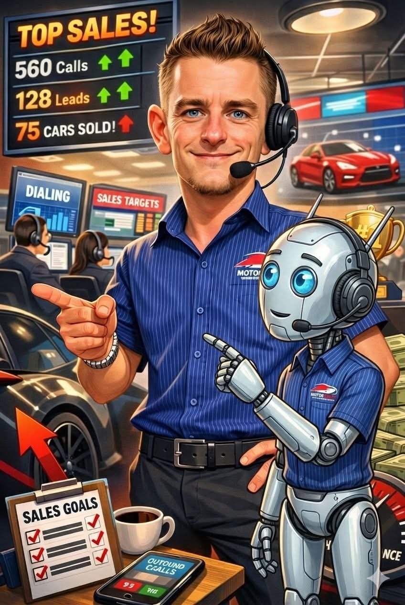

AI-enabled sales operations
Designed and deployed quote-beating, product-knowledge and automated reporting agents inside a multi-franchise call centre, alongside AI-assisted lead nurturing and multilingual call analysis.
Pretoria · South Africa
Twelve years across a dealership — marketing, national leads, the showroom floor, the service desk and the call centre — and two years building the AI agents that take the admin off all of it. Same person, both sides of the counter.
Selling Nissan’s passenger and LCV range, with a WhatsApp AI lead bot taking first response on enquiries and CRM carrying the follow-up.
Tiny — an agentic harness with 198 skills across 20 domains, live on Cloudflare Workers and answering the public.
Call-centre manager, service advisor, sales executive, national leads coordinator, marketing assistant. Every seat in the building.
Nothing here asks to be taken on trust — check it.
Profile
I have worked nearly every seat in a dealership: corporate marketing, national lead coordination, new and pre-owned sales, the service desk and the call centre. That range is the point — I know where a lead actually dies, why a customer stops answering, and which part of the month the numbers really come from.
The second half of the story is what I do about it. Rather than complain about repetitive admin, I started building software to absorb it — first getting large AI models running on hardware that had no business running them, then rebuilding that as an agent that plans a task, uses real tools and finishes it.
What I am after is a role where both halves count: someone who can hold a customer conversation on the floor in the morning and put a working automation in front of the team that afternoon.

Receipts
A CV is a page of claims about a person you have not met. So here is the part you can verify without me in the room — every item below opens in another tab.
Tiny runs at tiny.jaxtech.workers.dev on Cloudflare Workers AI, with a vector index for retrieval, D1 and KV behind the enquiry form, Turnstile on submissions and per-IP rate limiting. Talk to it yourself.
That figure is read from the live catalogue every time the page loads, so it cannot drift from what is actually there. Search the catalogue instead of believing the number.
Alongside the Cloudflare build, a separate agent runs on Google’s Agent Development Kit with Gemini on Cloud Run — and that code is public on GitHub. Read it before you interview me.
At the dealership a WhatsApp-based AI lead bot takes first response on enquiries, and in the call centre I introduced AI-assisted lead nurturing, multilingual call analysis and automated reporting. Built for a team that had to actually use it.
A scheduled job summarises the previous day’s enquiries and conversations at 06:00 and sends the digest out. The automation I talk about is the automation I run my own work on.
Handovers, delivery orientations and the ordinary moments of a sale, published on my YouTube channel. Judge the customer manner for yourself rather than reading an adjective about it.
The site you are reading is version-controlled on GitHub and deploys automatically on a reviewed merge to main. No PDF quietly edited after the fact.
What is deliberately not here: references and their contact details — available on request, but not published to the open internet. Nor is a street address, licence number or anything else that belongs on a form rather than a web page.
How the work happens
None of the automation started as a project plan. It starts on the floor, with something that wastes an hour a day, and goes round this loop until it either earns its place or gets killed.
A job that eats time every week and nobody enjoys — chasing leads, retyping quotes, rebuilding the same report.
The smallest thing that could possibly work, built after hours. No committee, no six-month roadmap.
Into real use the same week. If it needs a manual before anyone will touch it, it is wrong.
Kept only if it gives back real time. Plenty got killed — the cheapest part of the exercise.
Every one of these began as something that irritated me in a showroom, a workshop or a call centre.
The value is not any one tool. It is that the loop keeps going round — and that the person running it also has to sell the car at the end of it.
Selected impact
Designed and deployed quote-beating, product-knowledge and automated reporting agents inside a multi-franchise call centre, alongside AI-assisted lead nurturing and multilingual call analysis.
Analysed call and conversion performance, wrote the scripts and training that followed from it, and recruited the agents to run them.
Helped improve workshop flow in support of sustained revenue and CSI growth, and placed third in the group’s aftersales value-added product competition.
Built stock, marketing and sales reporting for management while coordinating digital marketing and internet leads across a regional dealer network.
Career history
Sell Nissan’s passenger and LCV range, manage prospecting and lead conversion through CRM and a WhatsApp-based AI lead bot, and build local pipeline through activations, outreach and referrals.
Analysed call and conversion performance, developed training and scripts, recruited agents, and introduced AI-assisted lead nurturing, multilingual call analysis and automated reporting.
Managed the customer and administrative lifecycle of vehicle servicing — from authorisation and repair communication to parts procurement, invoicing, complaint handling and compliant vehicle release.
Consistent Renault sales performer responsible for the full sales journey, personal marketing, referrals, and product-knowledge training for incoming sales executives.
Resolved computer and network problems for engineering and design teams across two warehouses and a head office during the COVID sales shutdown.
Managed sales targets, trade-in evaluations, stock photography and listings, personal marketing, customer retention and referrals.
Managed dealer marketing, advertising budgets, creative production, lead distribution and analytical reporting across a regional dealer network.
Qualified national web leads, coordinated dealer follow-up, and used sales data for retention and value-added product campaigns.
Published vehicle listings, launched dealer Facebook pages, planned content and distributed online enquiries.
Capabilities
Most people in a dealership do not build software, and most people who build software have never had to close a deal at month-end. The combination is the whole proposition.
Prospecting, needs analysis, demonstration, negotiation, trade-in evaluation, delivery and referral.
Authorisation, repair communication, parts procurement, invoicing, complaint resolution and compliant release.
Scripting, conversion analysis, agent training and recruitment, national lead qualification and dealer follow-up.
Dealer campaigns, budgets, creative production, listings, social advertising and content planning.
Clear communication across sales, service and complaint journeys, including the difficult conversations.
Building agents that plan a task, call real tools and finish it — not chatbots that answer and stop.
Cloudflare Workers, Workers AI, D1, KV and vector retrieval; a second stack on Google’s ADK with Gemini on Cloud Run.
Running large models on hardware never intended for it — where the hard lessons about memory, latency and reliability came from.
Turning “this wastes an hour a day” into a scheduled job that runs without supervision, including the reporting nobody wants to do.
Version control, review before deploy, automated deployment, and metered cost so a bad day has a ceiling.
Development
Renault South Africa Dzire Programme
College SA · accounting, business literature and applied mathematics
Compli-Serve
Oxbridge Academy · marketing, communication and computer technology
Facebook Blueprint Academy · social advertising and targeted campaigns
Self-directed, project-first — from local model inference to production agents
Customer moments
Handovers, delivery orientations and the moment someone finally gets the keys. Filmed on the job, so you can judge the manner rather than read an adjective about it.
Contact
Open to conversations about automotive sales and dealership operations, and about the AI-enabled side of it — the reporting, the lead handling and the admin that should not need a person.
Pretoria, South Africa nageljakes@outlook.com tiny.jaxtech.workers.dev github.com/Nageljakes References on request